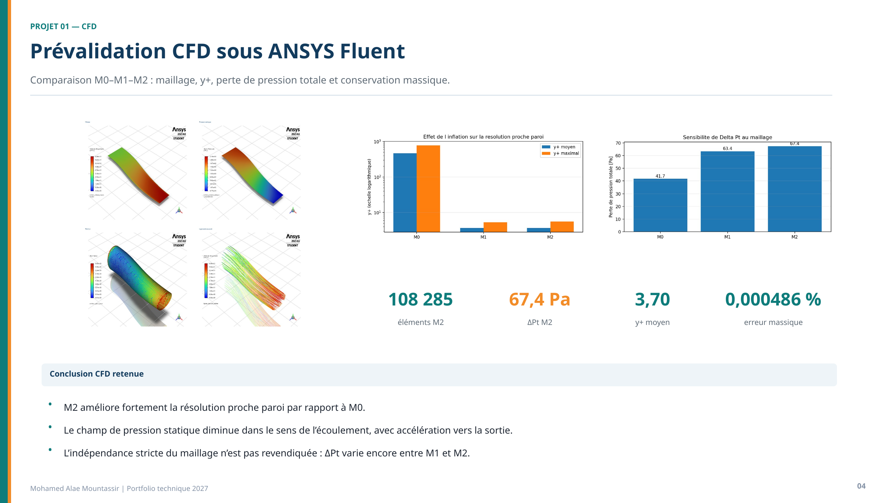
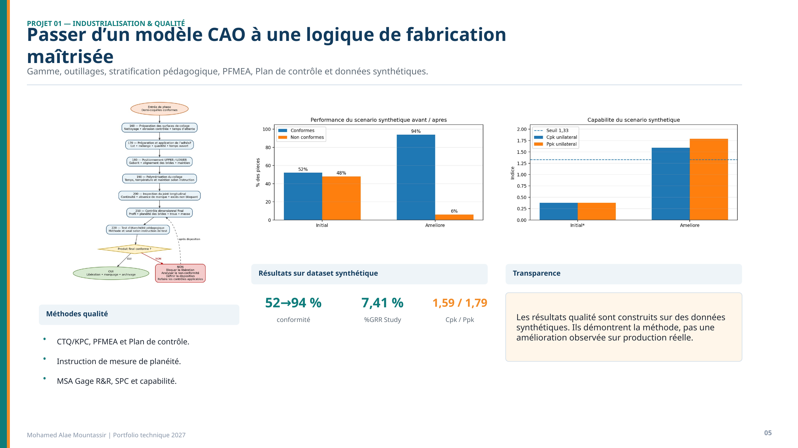

Projet personnel 01CATIA V5 · ANSYS Fluent · Python · Excel
DAI-COMP-001 — Duct Air Inlet composite
Projet multidisciplinaire reliant conception paramétrique CATIA V5, prévalidation CFD, préparation de l’industrialisation composite et chaîne qualité Python/Excel.
400 mmlongueur du conduit
7,41 %%GRR Study du MSA synthétique
108 285éléments du maillage M2
67,434 Paperte de pression totale M2
- Conception CATIA V5 d’un conduit de 400 mm en deux demi-coquilles UPPER/LOWER, avec paroi nominale de 2 mm, brides, perçages, assemblage et mise en plan.
- Prévalidation CFD sous Fluent avec comparaison M0–M1–M2 ; M2 : 108 285 éléments, y+ moyen 3,696, ΔPt = 67,434 Pa et erreur massique 0,000486 %.
- Préparation d’un scénario d’industrialisation composite : gamme, Process Flow Diagram, outillages conceptuels, drapage, collage et contrôles.
- Démarche qualité : CTQ/KPC, PFMEA, plan de contrôle, MSA, SPC et capabilité sur données synthétiques ; %GRR Study = 7,41 %.
Limites déclarées : projet personnel pédagogique sans fabrication ni validation expérimentale. La variation de ΔPt entre M1 et M2 reste de 6,38 %, donc l’indépendance stricte du maillage n’est pas démontrée. Les données qualité et les gains avant/après sont synthétiques.
Ce que ce projet m’a appris
À relier conception, simulation, fabricabilité et qualité dans une même démarche, tout en séparant clairement résultats numériques, hypothèses pédagogiques et validation industrielle.

Prévalidation CFD : maillage, y+, conservation massique et perte de pression.

Industrialisation & qualité : Process Flow, outillages, PFMEA, plan de contrôle, MSA/SPC et capabilité sur données synthétiques.